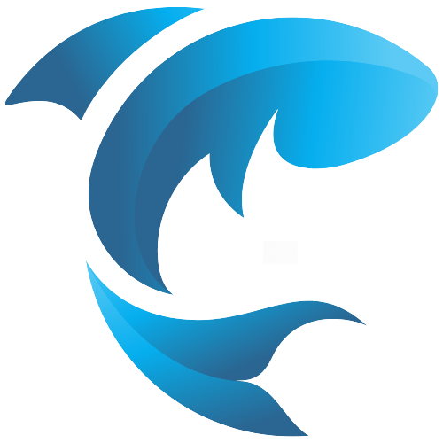

☰
 AquaSense
AquaSense Admin
System Administrator
📊 Dashboard
Cage 1
Cage 2
Cage 3
🔧 Main System
📅 Important Dates
Logout
Important Dates
Select Cage:
Cage 1
Cage 2
Cage 3
Select Date:
June 4, 2025
June 11, 2025
June 15, 2025
June 18, 2025
June 21, 2025
June 25, 2025
July 2, 2025
Dashboard Overview
🔄 Refresh Data
🤖 DEMO MODE - Simulated Data
📊 Dashboard Time Range
Last 3 Minutes
Last Hour
Last 3 Hours
Last 6 Hours
Last 12 Hours
Last 1 Day
🌊 DISSOLVED OXYGEN LEVELS - CRITICAL MONITORING
Real-time water quality across all active cages
Cage Details
--
Aerator
--
DO (mg/L)
--
Voltage (V)
--
Current (A)
100%
Battery
--
Last Update
📊 Chart Time Range
Last 3 Minutes
Last Hour
Last 3 Hours
Last 6 Hours
Last 12 Hours
Last 1 Day
📈 Voltage & Current Monitoring
🌊 DISSOLVED OXYGEN LEVEL
📥 Download Data
📅 Download Past Month
📥 Download Data Range
×
Start Date & Time:
End Date & Time:
Download Timeframe:
Custom Date Range
Last 3 Minutes
Last Hour
Last 3 Hours
Last 6 Hours
Last 12 Hours
Last 1 Day
Last 2 Days
Last 3 Days
Last 1 Week
Last 2 Weeks
Last 3 Weeks
Last 1 Month
Select Cage:
Cage 1
Cage 2
Cage 3
Main System
Cancel
Download CSV